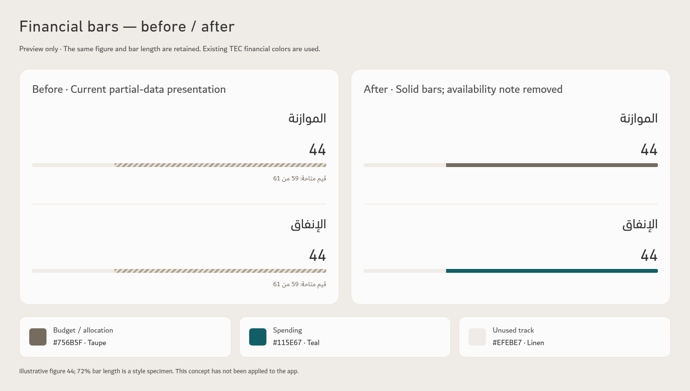

Before · current app
المشاريع الخاصة · لا توجد بنود متأخرة
نسبة المنجز27.8%
After · 14px labels, 28px figures, 28px subgroup names
المشاريع الخاصة · لا توجد بنود متأخرة
نسبة المنجز27.8%
Before · current app
الأجندة السنوية · لا توجد بنود متأخرة
After · 14px labels, 34px agenda figures
الأجندة السنوية · لا توجد بنود متأخرة
Before · current app
تغطية القياس 72.2% · 15 غير مقاسمتوسط نتائج 39 مؤشراً مقاساً
After · 14px metric names, 34px figures
تغطية القياس 72.2% · 15 غير مقاسمتوسط نتائج 39 مؤشراً مقاساً
Revised typography and colors
| Element | Screen size | Font | Text color |
|---|
| Subgroup totals / special-project figures | 28px | DIN Next LT Arabic Regular | Charcoal #333333; status exceptions |
| Agenda / strategy figures | 34px | DIN Next LT Arabic Regular | Charcoal #333333; status exceptions |
| Subgroup names | 28px | Dubai Regular | Charcoal #333333 |
| Short labels / strategy metric names | 14px | Dubai Regular | Ink #4F4E4E |
| Table names, content and notes | 16px | Dubai Regular | Ink #4F4E4E |
| Important explanations | 14px | Dubai Regular | Ink #4F4E4E |
| Change arrows / differences | 15px | Dubai Regular | Taupe #756B5F; performance exceptions |
| Minor metadata | 14px | Dubai Regular | Taupe #756B5F |
| Table column headings | 18px | Dubai Bold | Ink #4F4E4E |
Approved financial bars
